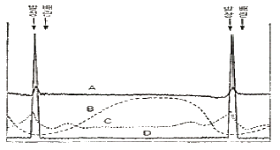
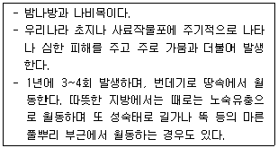

축산산업기사 (2010-09-05 기출문제)
1과목: 가축번식 육종학
1. 가축 영양소 중 성적기능이 가장 중요한 비타민으로 번식비타민 또는 항불임 비타민이라 불리는 것을?
- 비타민 A
- 비타민 C
- 비타민 D
- 비타민 E
(정답률: 66%)

2. 뇌하수체 전엽 호르몬 중 난포의 발육과 난조세포의 성숙에 관여하는 호르몬은?
- 황체형성호르몬
- 난포자극호르몬
- 황체자극호르몬
- 황체호르몬
(정답률: 85%)
3. 닭의 조숙성은 일반적으로 무엇으로 나타내는가?
- 초산일령
- 산란강도
- 취소성
- 동기휴산성
(정답률: 80%)
4. 소의 분만 과정을 단계별로 가장 잘나타낸 것은?
- 진통기 → 산출기 → 태아만출기
- 진통기 → 만출기 → 후산기
- 준비기 → 진통기 → 태아만출기
- 준비기 → 후산기 → 만출기
(정답률: 71%)
5. 유우에 있어서 한 형질의 유전력이 0일 때 이형질에 대한 선발의 효과는?
- 유전적 개량의 효과는 100%이다.
- 표현형의 모든 것은 환경 효과에 달려 있다.
- 유전적 효과와 환경의 효과는 각각 절반이다.
- 유적적 개량의 효과는 50% 이다.
(정답률: 71%)
6. 일반적으로 근친교배에 의하여 젖소의 비유량과 유지함량은 어떠한 영향을 받는가?
- 저하된다.
- 상승한다.
- 영향이 없다.
- 상황에 따라 다르다.
(정답률: 86%)
7. 육용계의 자질개량을 위한 선발요건으로 고려할 사항이 아닌 것은?
- 볏의 모양
- 성장률
- 우모의 발생속도
- 우모의 색
(정답률: 78%)
8. 배란을 가장 적합하게 설명한 것은?
- 황체가 정상적으로 형성되는 것
- 새로운 초기 세포가 출현하는 것
- 그라프난포가 파열하여 난자가 맹출되는 것
- 초기세포를 배출시키는 난소가 내분비 활동하는 것
(정답률: 77%)
9. 젖소를 선발할 때에 다음 중 선발정확도를 높이기 위한 방안이 아닌 것은?
- 반복적으로 한 형질을 측정한다.
- 후대 검정을 실시한다.
- 혈연관계를 이용하여 능력을 조사한다.
- 여러 마리로부터 선발한다.
(정답률: 66%)
10. 소의 직장검사는 수정후로부터 임신 몇일째 임신여부를 거의 확실하게 판단할수 있는가?
- 40~50일
- 60~70일
- 75~85일
- 90~100일
(정답률: 67%)
11. 닭의 난형지수(알의 너비/알의 길이)의 정상적인 범위는?
- 0.50 ~ 0.55
- 0.60 ~ 0.65
- 0.70 ~ 0.75
- 0.80 ~ 0.85
(정답률: 58%)
12. 육종가에 의하여 선발을 할 때, 다음 조건하에서 이 젖소의 육종가는? (단, 유전력 : 0.20, 젖소의 산유량 6000kg, 모집단위의 평균 산유량 : 5500kg)
- 5600kg
- 5700kg
- 6000kg
- 6500kg
(정답률: 59%)
13. 다음의 그림은 소의 성주기(발정주기에 있어서 혈중호르몬 농도의 상대적 변화 모식도 이다. 황체형성 호르몬(LH)의 농도변화를 나타낸 곡선은 A, B, C, D 중 어느 것인가?

- A
- B
- C
- D
(정답률: 63%)
14. 돼지의 경제형질과 거리가 먼 것은?
- 이유시 체중
- 이유 후 성장률
- 사료 효율
- 모색
(정답률: 88%)
15. 다음 중 1대 잡종의생산을 위하여 많이 쓰이는 어미돼지의 품종은?
- Poland China 종
- Landrece 종
- Duroc 종
- Berkahire 종
(정답률: 84%)
16. 자궁 운동의 억제를 유도하여 임신유지에 중요한 역할을 하는 호르몬은?
- Testosterone(테스토스테론)
- Prostaglandin F2(프로스타 글란딘)
- Progesterone(프로게스테론)
- Estrogen(에스트로겐)
(정답률: 60%)
17. 산란계와 육용계의 공동적인 개량대상 형질로 볼 수 없는 것은?
- 초산일령
- 사료요구율
- 강건성
- 항병성
(정답률: 73%)
18. 돼지의 150일령 체중에 대해 개체 선발을 하였을 경우에 종축으로 선발된 암퇘지와 수퇘지에 대한 선발차가 각각 4kg 및 6kg이었고, 150일령 체중의 유전력이 30%였다면, 이 때 기대되는 세대당 유전적 개량량은?
- 1.5kg
- 1.4kg
- 1.2kg
- 1.0kg
(정답률: 72%)
19. 가축생식기의 해부학적 결함에서 오는 번식장해의 원인은?
- 생식기 전염병
- 식물성 estrogen
- 유전적 원인
- 잠복정소
(정답률: 83%)
20. 뇌하수체 후엽 호르몬은?
- 프로락틴
- 옥시토신
- 티록신
- 에스트로겐
(정답률: 81%)
2과목: 가축사양학
21. 반추위내 섭취된 단백질에 대한 미생물의 작용과 관련하여 RUP란 용어는 무엇을 의미하는가?
- 에너지 생성회로를 의미
- 요소의 분해과정을 의미
- 반추위내 생성된 암모니아를 의미
- 반추위내 분해되지 않는 단백질의 의미
(정답률: 70%)
22. NRC 사양표준에서 산란용 초생추(0~6주) 사료 1kg 중에 들어있는 대사에너지는 2900kcal이고, 이 사료의 조단백질 함량이 161.1%일 때 칼로리 단백질 비율(c/p비율)은 얼마인가?
- 12
- 14
- 16
- 18
(정답률: 52%)
23. 비육이 잘된 도체(屠體)에는 다음 조성분 중 어느 성분이 가장 많이 함유되어 있는가?
- 단백질
- 지방
- 탄수화물
- 무기물
(정답률: 86%)
24. 탄수화물의 소화 최종분해물인 단당류는 소장에서 거의 흡수가 되지만 단당류별 흡수속도에 차이가 있는데 다음 중 상대 흡수률 속도가 높은 순서대로 나열한 것은?
- glucose ＞ galactose ＞ fructose ＞ pentose
- galactose ＞ glucose ＞ fructose ＞ pentose
- galactose ＞ fructose ＞ glucose ＞ pentose
- pentose ＞ fructose ＞ glucose ＞ galactose
(정답률: 60%)
25. 성장한 가축에서 주로 골연화증의 원인이 되는 비타민은?
- 비타민 A
- 비타민 D
- 비타민 B1
- 비타민 E
(정답률: 74%)
26. 산란계 중 늙은 닭에서 산란율이 떨어지기 시작한 경우의 칼로리 단백질 비율로 가장 적합한 것은? (단, 대사에너지로 환산한 값이다.)
- 166~170
- 175~180
- 193~195
- 196~210
(정답률: 59%)
27. 동물의 간에서는 여러 가지 복잡한 대사작용이 일어나는데 그 중에서 간에 지방이 과도하게 축적이 되는 것을 예방하기 위해 최저밀도 지단백질인 VLDL(very low density lipoprotein)에 의해 간 밖으로 운반되는데 이 과정에서 운반인자로 작용하는 물질을?(오류 신고가 접수된 문제입니다. 반드시 정답과 해설을 확인하시기 바랍니다.)
- Methionone 과 Lysine
- Lysine 과 Choline
- Phenylalanine 과 Lisine
- Methionine 과 Choline
(정답률: 52%)
28. 동물에 필요한 영양소의 특징을 바르게 설명한 것은?(오류 신고가 접수된 문제입니다. 반드시 정답과 해설을 확인하시기 바랍니다.)
- 전분은 탄수화물 중 일종의 조섬유이다.
- 염소(chlorine, Cl)는 다량 필수광물질에 속한다.
- 인지질(phosphlipid)은 단순지방이다.
- 세린(serine)은 필수 아미노산이다.
(정답률: 51%)
29. 가소화 조단백질 함량이 10%, 가소화 조지방 함량이 4%, 가소화 가용무질소물 함량이 60%, 가소화 조섬유 함량이 30%인 사료의 TDN 함량은?
- 72.00%
- 77.00%
- 80.75%
- 109.00
(정답률: 66%)
30. 무기물의 일반적 기능을 설명한 것 중 틀린 것은?
- 뼈와 치아의 주요 구성성분이다.
- 삼투압. pH를 조절한다.
- 인지질, 핵단백질, 색소 단백질과 같은 유기화합물을 구성한다.
- 섭취된 필요 이외의 무기물은 똥과 오줌으로 배설되어 아무 이상이 없다.
(정답률: 80%)
31. 가축의 방목 이용시 단점으로 가장 적합한 것은?
- 사양에 투입되는 노동력을 절감
- 기호성이 좋은 풀만 서택 채식
- 가축의 건강에 유리
- 가축 배설물의 초지 환원으로 환경오염 방지
(정답률: 77%)
32. 다음 중 육질이 좋은 비육용 밑소의 외형적 특성에 의한 선정법으로 적합하지 않은 것은?
- 피모는 가늘고 일생하여 있을 것
- 피부는 얇고, 연하며 탄력이 있을 것
- 체장이 길고 흉폭이 넓으며 몸의 길이가 충분히 있을 것
- 발굽은 크고 두꺼우며 미끈미끈한 것으로 질이 치밀하고 단단한 것
(정답률: 66%)
33. 성장촉진 효과가 인정되는 미지성장인자는 무엇인가?
- U.G.F
- B.H.A
- Pigmenter
- Nitrofurazon
(정답률: 68%)
34. 닭의 필수아미노산에 추가하여 꼭 공급해 주어야 하는 아미노산은?
- 시스틴
- 글리신
- 알라닌
- 글루탐산
(정답률: 61%)
35. 소비육 사료에다 우지를 첨가시에 체지방 중에서 증가되는 지방산은 어떤 것인가?
- 팔미트산
- 올레산
- 리놀산
- 리놀렌산
(정답률: 71%)
36. 다음소화율 방법 중 인공 반추위를 이용한 소화율 평가법은 무엇인가?
- In Situ 소화율 시험법
- In Vivo 소화율 시험법
- In Vitro 소화율 시험법
- Nylon bag 소화율 시험법
(정답률: 51%)
37. 요오드가가 가장 낮은 것은?
- 옥수수기름
- 면실유
- 야자유
- 콩기름
(정답률: 66%)
38. 소화율에 영향을 주는 인자에 관한 설명으로 틀린 것은?
- 건초는 생초보다 소화율이 높고 사일리지는 소화율리 약간 증진된다.
- 노령기의 가축은 장령기의 가축에 비해 조사료의 소화율이 떨어진다.
- 지방은 너무 많이 첨가되면 소화율이 떨어진다.
- 소화율은 가축의 종류에 따라서 차이가 있다.
(정답률: 70%)
39. 난황의 주된 색소는?
- carotene
- xanthophyll
- pigment
- dynafac
(정답률: 66%)
40. 쥐의 무모증과 지방간을 예방하는 작용이 있는 물질은?
- 라이신
- 이노시톨
- 비타민 B12
- 엽산
(정답률: 67%)
3과목: 축산경영학
41. 다음 중 유통 자본재에 해당하는 것은?
- 트랙터
- 번식우
- 비육돈
- 착유우
(정답률: 75%)
42. 어느 한우경영농가의 연간소득이 1,800만원이고, 자본투하액이 9,000만원이라면 자본생산성은 얼마인가?
- 0.2
- 0.4
- 0.6
- 0.8
(정답률: 75%)
43. 축산경영자의 의사결정 과정에서 일반적으로 고려되는 내용이라고 볼 수 없는 것은?
- 생산하고자 하는 축산물(가축)의 종류
- 축산물을 생산하고자 하는 동기
- 가축의 사육방법
- 생산된 축산물(가축)의 판로
(정답률: 74%)
44. 다음 중 축산경영의 일반적 특징이 아닌 것은?
- 2차 생산의 성격
- 직접적 토지관계
- 물량감소의 성격
- 생산물의 저장
(정답률: 68%)
45. “고립국(孤立國)”의 이론을 전개한 사람은?
- Von Thunen
- Quesney
- Adam Smith
- D Ricardo
(정답률: 50%)
46. 다음 중 축산경영의 목표와 거리가 먼 것은?
- 생산의 최대화
- 소득의 최대화
- 지대의 최대화
- 자본이자의 최대화
(정답률: 46%)
47. 농업부기의 목적이 아닌 것은?
- 생산물의 수익성을 파악
- 경영의 개선점을 파악
- 특정 시점의 재정 상태를 파악
- 농자재의 제품정보를 파악
(정답률: 81%)
48. 기초 대차대조표에서 자산 800만원, 부채 120만원 이었고 기말 대차대조표에서 자산 950만원, 부채 200만원인 경우 경영의 단기 순이익금은?
- 70만원
- 80만원
- 120만원
- 150만원
(정답률: 72%)
49. 농업노동의 특수성에 해당되지 않는 것은?
- 농업노동의 이동성
- 농업노동의 다양성
- 농업노동 과정의 연속성
- 농업노동의 계절성
(정답률: 60%)
50. 가변투입요소의 1단위 증투에서 오는 산출물의 변동을 뜻하는 것은?
- 평균생산력
- 총생산력
- 한계생산력
- 순생산력
(정답률: 78%)
51. 다음 중 자본회전이 가장 빠른 축종은?
- 육계
- 번식돈
- 비육우
- 비육돈
(정답률: 84%)
52. 낙농경영에서 젖소 감가상각비 계산에 관계없는 것은?
- 착유우평가액
- 폐우가격
- 우유판매가격
- 내용년수
(정답률: 75%)
53. 양돈비육농가가 자돈을 30kg에 구입하여 106일 동안 사육한 후 체중이 110kg일 때 출하하였다. 이 기간 동안 비육돈 두당 사료 섭취량은 228kg 이었다. 이 농가의 사료 요구율은 얼마인가?
- 2.75
- 2.80
- 2.85
- 2.90
(정답률: 66%)
54. 다음 축산시설 자동화의 직접적 효과에 해당되지 않는 것은?
- 작업의 신속화
- 노동생산성 감소
- 경영규모 확대
- 노동력 절감
(정답률: 71%)
55. 축산경영의 3요소가 아닌 것은?
- 토지
- 자본재
- 노동력
- 기술
(정답률: 80%)
56. 복합경영의 장점과 거리가 먼 것은?
- 노동배분의 평균화를 기 할수 있다.
- 토지를 합리적으로 이용할 수 있다.
- 자금회전을 원활히 할 수 있다.
- 노동의 숙력도를 높이고 분업의 이익을 얻을 수 있다.
(정답률: 72%)
57. 다음 중 비육우경영의 조수입을 증대시키는 방법이 아닌 것은?(오류 신고가 접수된 문제입니다. 반드시 정답과 해설을 확인하시기 바랍니다.)
- 송아지 판매두수를 늘린다.
- 송아지 사료비를 절감한다.
- 송아지 판매단가를 높인다.
- 기간내 송아지 생산효율을 높인다.
(정답률: 24%)
58. 축산경영의 조직 결정시 고려하여야 할 사회적 조건이 아닌 것은?
- 국민의 풍속, 습관, 전통
- 과학기술의 발전과 발달
- 축산시책과 제도
- 경영자의 능력
(정답률: 70%)
59. 손익계산서 등식으로 옳은 것은?
- 총수익 + 이익 = 총비용
- 총비용 + 순수익 = 순이익
- 총비용 - 총수익 = 순이익
- 총수익 - 총비용 = 순손실
(정답률: 51%)
60. 대농기구나 건물 등을 경영에 사용할 때는 감가상각비가 발생하지만 토지는 감가상각을 계산하지 않는다. 그 이유는?
- 불가증성
- 불가동성
- 불가경력
- 불소모성
(정답률: 83%)
4과목: 사료작물학
61. 식물체의 화학조성 차이로 사일리지 원료에도 완충능력의 차이가 존재한다. 완충능력이 강하면 유산이 생성되어도 pH 저하의 효율이 나빠지면 낙산발효가 일어나기 쉽다. 사료작물 중에서 완충능력이 강한 순에서 약한순으로 나열된 것은?(오류 신고가 접수된 문제입니다. 반드시 정답과 해설을 확인하시기 바랍니다.)
- 페레니얼라이그라스 ＞ 옥수수 ＞ 알팔파
- 옥수수 ＞ 알팔파 ＞ 오차드그라스
- 오차드그라스 ＞ 알팔파 ＞ 옥수수
- 알팔파 ＞ 오차드그라스 ＞ 옥수수
(정답률: 42%)
62. 다음 목초 중 뿌리가 가장 깊게 뻗는 초종은?
- 티모시
- 오차드그라스
- 알팔파
- 라디노클로버
(정답률: 72%)
63. 연맥(귀리)을 풋베기(청예)로 이용할 때 생산성과 기호성을 고려한 알맞은 수확시기는?
- 수잉기전
- 수잉기~출수기
- 출수후기
- 개화기
(정답률: 81%)
64. 다음 중 양호한 옥수수 사일리지(silage)의 색깔은?
- 갈색
- 흑갈색
- 암갈색
- 담황녹갈색
(정답률: 83%)
65. 다음중 haylage(헤일리지)에 대한 설명으로 가장 올바른 것은?
- 수분함량은 40 ~ 60%이다.
- 주로 트랜치 사일로에 저장한다.
- 즙액유실로 인한 손실이 많다.
- 일반적인 사일리지 보다 섭취량이 낮다.
(정답률: 75%)
66. 콩과식물의 상호 접종균 중 알팔파와 상호 접종이 가능한 초종은?
- 레드클로버
- 화이트클로버
- 스위트클로버
- 알사이크클로버
(정답률: 40%)
67. 중부지방의 최종 예취적기는?
- 8월 하순
- 9월 상순
- 9월 중순
- 10월 상준순
(정답률: 62%)
68. 사일리지 발효균 중 산소가 없는 곳에서 잘 번식하는 젖산균의 생육적온은?(오류 신고가 접수된 문제입니다. 반드시 정답과 해설을 확인하시기 바랍니다.)
- 4~7℃
- 8~35℃
- 40~55℃
- 55~65℃
(정답률: 39%)
69. 경운초지조성시 석회시용에 관한 설명 중 가장 효과가 좋은 시용 방법은?
- 경운전에 전면에 전량을 살포하고 경운한다.
- 사용량의 반량은 경운전에 나머지 반량은 경운 후에 시용한다.
- 경운한 후에 전량을 고루 살포한다.
- 경운한 후에 반량을 살포하고 나머지 반은 종자 파종 후 한다.
(정답률: 77%)
70. 화본과 목초는 초종에 따라 지하경이나 포복경을 갖으며, 이러한 초종의 대부분은 방석형 초지를 형성한다. 이러한 초종에 속하는 목초인 것은?
- 오차드그라스(Orchardgrass)
- 티모시(Timothy)
- 이탈리안 라이그라스(Italian ryegrass)
- 켄터키블루그라스(Kentucky bluegrass)
(정답률: 60%)
71. 화본과 사료 작물의 생육기 중 생식생장기에 속하는 것은?
- 절간 신장기
- 출아기
- 분얼기
- 유묘기
(정답률: 69%)
72. 작부체계는 지역에 따라 다르다. 다음 중 중부지방에서의 작부체계에 대한 설명으로 올바른 것은?
- 부작물로 초기 생육과 활력이 좋은 이탈리안 라이그라스가 알맞다.
- 여름철 주작물로는 사일리지가 용이한 수단그라스계 잡종이 가장 좋다.
- 가을에 연맥(귀리)을 파종하면 봄철에 우수한 건초를 얻을 수 있다.
- 주작물은 옥수수, 부작물로는 호맥(호밀)이 가장많이 이용된다.
(정답률: 69%)
73. 다음 중 목초를 혼파할 때에 주의해야 할 점을 거리가 먼 것은?
- 유식물의 억압력이 비슷한 것끼리 혼파한다.
- 기호성이 비슷한 것끼리 혼파한다.
- 다양한 초종을 혼파해야 혼파의 장점을 얻을 수 있다.
- 생리적 요구조건이 비슷한 것끼리 혼파한다.
(정답률: 76%)
74. 알팔파의 수확적기는?
- 개화초기
- 개화중기
- 출뢰전기
- 개화만개기
(정답률: 63%)
75. 건초를 제조하는 과전에서 화본과 보다 두과에서 발생하기 쉬운 양분손실은?
- 발효, 공기접촉 및 일광조사에 의한 손실
- 잎의 탈락에 의한 손실
- 강우에 의한 손실
- 호흡에 의한 손실
(정답률: 65%)
76. 척박한 토양에 잘 자라며 답리작 재배에 적합한 사료작물은?
- 옥수수
- 수수-수단그라스계 잡종
- 호민
- 유채
(정답률: 61%)
77. 수단그라스계 잡종이 어릴 때 많이 함유되어 있는 유해성분으로 가축 중독의 원인이 될수 있는 성분은?
- 청산
- 질산
- 개미산
- 염산
(정답률: 85%)
78. 다음 설명하는 해충은?

- 조명나방 유충
- 명강나방 유충
- 검거세미나방 유충
- 콩풍뎅이 유충
(정답률: 79%)
79. 다음 중 콩과 사료작물의 설명으로 틀린 것은?
- 꼬투리가 있다.
- 근류균이 접종된 뿌리에서는 질소고정을 한다.
- 뿌리가 수염의 형태로 되어있다.
- 토양의 비옥도를 높여 준다.
(정답률: 79%)
80. 사료작물을 파종할 때 조파는 산파보다 파종량을 어느 정도 감소시킬 수 있는가?
- 20~30%
- 30~50%
- 50~60%
- 60~65%
(정답률: 65%)